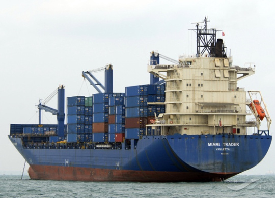

Я - Влад, и это мой блог!
Привет!
Сейчас я работаю электромехаником на контейнеровозе "Kalamoti Trader". Вот онлайн-карта, которая должна показывать, где сейчас находится мой пароход. Но, иногда информация запаздывает, и позиция судна на карте отличается от реальной.